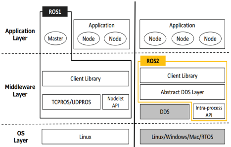
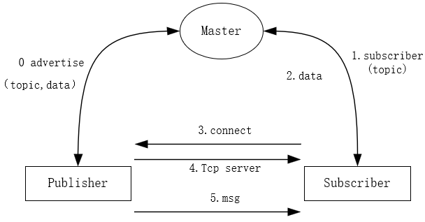
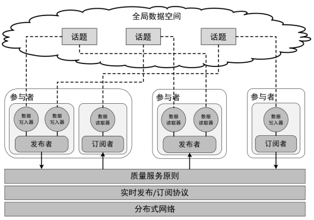

ROS2
0 ROS2 安装
0.1 ROS2 安装 (galactic)
官方要求是需要确认支持UTF-8，虽然说起来似乎不一定需要，不过确认一下即可。 特别是在docker容器内使用时，由于locale经常会被最小化地设置为POSIX。
locale # check for UTF-8
sudo apt update && sudo apt install locales
sudo locale-gen en_US en_US.UTF-8
sudo update-locale LC_ALL=en_US.UTF-8 LANG=en_US.UTF-8
export LANG=en_US.UTF-8
locale # verify settings
设置Ubuntu Universe仓库
sudo apt install software-properties-common
sudo add-apt-repository universe
sudo apt update && sudo apt install curl gnupg lsb-release
sudo curl -sSL https://raw.githubusercontent.com/ros/rosdistro/master/ros.key -o /usr/share/keyrings/ros-archive-keyring.gpg # 验证GPG key
sudo sh -c 'echo "deb [arch=$(dpkg --print-architecture)] http://packages.ros.org/ros2/ubuntu $(lsb_release -cs) main" > /etc/apt/sources.list.d/ros2-latest.list' # 将仓库加入软件源
sudo apt update
sudo apt install ros-galactic-desktop
# sudo aptitude install ros-galactic-desktop
# sudo apt install ros-galactic-ros-base # 没有GUI工具
在.bashrc文件中添加source /opt/ros/galactic/setup.bash。
测试
ros2 run demo_nodes_cpp talker
ros2 run demo_nodes_cpp listener
0.2 ROS2 安装 (dashing)
0.2.1 设置语言环境
确保您有一个支持的语言环境 UTF-8. 如果您处于最小环境（例如 docker 容器）中，则语言环境可能是最小的，例如 POSIX. 我们使用以下设置进行测试。 但是，如果您使用不同的 UTF-8 支持的语言环境应该没问题。
locale # check for UTF-8
sudo apt update && sudo apt install locales
sudo locale-gen en_US en_US.UTF-8
sudo update-locale LC_ALL=en_US.UTF-8 LANG=en_US.UTF-8
export LANG=en_US.UTF-8
locale # verify settings
0.2.2 添加 ROS2 apt 存储库
sudo apt update && sudo apt install curl gnupg2 lsb-release
sudo curl -sSL https://raw.githubusercontent.com/ros/rosdistro/master/ros.key -o /usr/share/keyrings/ros-archive-keyring.gpg
echo "deb [arch=$(dpkg --print-architecture) signed-by=/usr/share/keyrings/ros-archive-keyring.gpg] http://packages.ros.org/ros2/ubuntu $(lsb_release -cs) main" | sudo tee /etc/apt/sources.list.d/ros2.list > /dev/null
0.2.3 安装开发工具
sudo apt update && sudo apt install -y \
build-essential \
cmake \
git \
python3-colcon-common-extensions \
python3-pip \
python-rosdep \
python3-vcstool \
wget
# install some pip packages needed for testing
python3 -m pip install -U \
argcomplete \
flake8 \
flake8-blind-except \
flake8-builtins \
flake8-class-newline \
flake8-comprehensions \
flake8-deprecated \
flake8-docstrings \
flake8-import-order \
flake8-quotes \
pytest-repeat \
pytest-rerunfailures \
pytest \
pytest-cov \
pytest-runner \
setuptools
# install Fast-RTPS dependencies
sudo apt install --no-install-recommends -y \
libasio-dev \
libtinyxml2-dev
# install Cyclone DDS dependencies
sudo apt install --no-install-recommends -y \
libcunit1-dev
0.2.4 构建代码
# 获取 ROS2 dashing
mkdir -p ~/ros2_dashing/src
cd ~/ros2_dashing
wget https://raw.githubusercontent.com/ros2/ros2/dashing/ros2.repos
vcs import src < ros2.repos
# rosdep 安装依赖项
sudo rosdep init
rosdep update
rosdep install --from-paths src --ignore-src --rosdistro dashing -y --skip-keys "console_bridge fastcdr fastrtps libopensplice67 libopensplice69 rti-connext-dds-5.3.1 urdfdom_headers"
# 编译
cd ~/ros2_dashing/
colcon build --symlink-install
# environment setup
. ~/ros2_dashing/install/setup.bash
# 示例
## 一个终端输入
. ~/ros2_dashing/install/local_setup.bash
ros2 run demo_nodes_cpp talker
## 另一个终端输入
. ~/ros2_dashing/install/local_setup.bash
ros2 run demo_nodes_py listener
2 ROS1的优缺点
2.1 优点
通信机制
开发工具
应用功能
生态系统
2.2 缺点
多机器人系统-没有构建多机器人系统的标准方法
跨平台-无法适用于Windows/RTOS等系统
实时性-缺少实时性方面的设计
网络连接-需要良好的网络环境保证数据的完整性
产品化-从科学研究到消费产品的过渡欠佳
项目管理-无法胜任完整生命周期下项目管理
3 ROS2的最大改变
架构的颠覆
ROS1的架构下，所有节点需要使用Master节点进行管理
ROS2使用基于DDS的Discovery机制
API的重新设计
ROS1中的大部分代码基于2009年设计的API
ROS2重新设计用户API，使用方法类似
编译系统的升级
ROS1使用catkin管理项目
ROS2使用ament进行编译引导，colcon进行编译
4 架构对比

| 对比项 | 不同点 |
|---|---|
| OS | ROS1：Linux ROS2：Linux/Windows/Mac/RTOS |
| 通讯 | ROS1：TCPROS/UDPROS ROS2：DDS |
| 节点模型 | ROS1：subscriber/publisher ROS2：Discovery |
| 进程 | ROS1：Nodelet ROS2：Intra-process |
ROS2开发重点
通信机制（轻）
开发工具（重）
应用功能（重）
生态系统（重）
由于ROS2使用DDS进行通信，开发者可以把更多的精力放在其他开发工作方面。
5 ROS2通信机制DDS
5.2 DDS概述及其特点
DDS(Data Distribution Service，数据分发服务)技术核心是以数据为核心的发布/订阅模型(Data-Centric Publish-Subscribe ，DCPS)，这种DCPS模型创建了-一个“全域数据空间”(global data space)的概念，所有独立的应用都可以访问。
5.2.1 ROS1的通信模型

ROS Master启动
Publisher注册
Subscriber注册
ROS Master进行信息匹配
Subscriber发送连接请求
Publisher确认连接请求
建立网络连接
Publisher向Subscriber发布数据
5.2.2 ROS2通信模型
DDS是ROS2通信的中间件，默认的供应商是RTI公司的Connext，若需要其他供应商的DDS，可以自行配置。

参与者（Domain Participant）
一个参与者Participant就是一个容器，对应于一个使用DDS的用户，任何DDS的用户都必须通过Participant访问全局数据空间
发布者（Publisher）
数据发布的执行者，支持多种数据类型的发布，可以与多个数据写入器（DataWriter）相联，发布一种或多种主题（Topic）的消息
订阅者（Subscriber）
数据订阅的执行者，支持多种数据类型的订阅，可以与多个数据读取器（DataReader）相联，订阅一种或多种主题的消息
数据写入器（DataWriter）
应用向发布者更新数据的对象，每个数据写入器对应一个特定的Topic，类似于ROS1中的一个消息发布者
数据读取器（DataReader）
应用从订阅者读取数据的对象，每个数据读取器对应一个特定的Topic，类似于ROS1中的一个消息订阅者
主题（Topic）
与ROS1中的概念一致，包含一个话题名称和一种数据结构
Qos（Quality of Service）
服务质量原则，控制各方面与底层的通讯机制，主要从时间限制、可靠性、持续性、历史记录等方面，满足用户针对不同场景的数据应用需求
5.2.3 DDS的核心价值
分散式架构和时空解耦
可进化性和可扩展性
稳定可靠的通信
关键任务和业务取向
容错和冗余
即插即用及互操作性
5.2.4 Qos质量服务原则
历史(History)
Keep last：只存储最多N个样本， 通过队列深度设置
Keep all: 存储所有样本， 由底层中间件的资源大小限制
深度 (Depth)
队列的大小： 只有在和Kepp last一起时才会起作用
可靠性 (Reliability)
最高效率： 尝试发送数据， 但是在网络不好的情况下有可能丢包
高可靠性: 保证数据发送成功， 但是可能会重试发送多次
耐久力 (Durability)
本地缓存(Transient local): 发送者会为还未加入的节点保存未接收的数据
自动挥发(Volatile): 不会特意保存数据
6 ROS2的编译系统
6.1 参考资料
ROS 2 在Bouncy之前的发行版，使用的编译工具是ament_tools，之后是colcon。ROS2支持多平台，以下代码示例基于Ubuntu的平台。
6.2 CMakeLists.txt 和 package.xml 的不同
cmake_minimum_required(VERSION 3.5)
project(ros2_demo)
# 缺省版本 C++14
if(NOT CMAKE_CXX_STANDARD)
set(CMAKE_CXX_STANDARD 14)
endif()
# 查找库
find_package(ament_cmake REQUIRED)
find_package(rclcpp REQUIRED)
find_package(std_msgs REQUIRED)
find_package(example_interfaces REQUIRED)
# 查找依赖文件
add_executable(ros2_talker src/ros2_talker.cpp)
# 链接库
# 用于代替传统的target_link_libraries
ament_target_dependencies(ros2_talker rclcpp std_msgs)
# 注册 导出库文件
install(TARGETS
ros2_talker # 告诉ros2有这么个目标（可执行文件或者库）
DESTINATION lib/${PROJECT_NAME}
)
# 宏，安装package.xml
ament_package()
<buildtool_depend>ament_cmake</buildtool_depend>
<buildtool_depend>rosidl_default_generators</buildtool_depend>
<!-- 客户端库 -->
<build_depend>rcl</build_depend>
<!-- 中间件 -->
<build_depend>rmw_implementation</build_depend>
<exec_depend>rcl</exec_depend>
<exec_depend>rmw_implementation</exec_depend>
<exec_depend>rosidl_default_runtime</exec_depend>
6.2 语法的不同
支持C++14/C++17，使用了大量的auto/智能指针/Lambda函数等语法，充分发挥C++的高效
Python默认版本Python3
注释是基于ROS1的实现API
int main(int argc, char ** argv)
{
//ros::init(argc, argv, "add_two_ints_client");
rclcpp::init(argc, argv);
//ros::NodeHandle n;
auto node = rclcpp::Node::make_shared("add_two_ints_client");
//ros::ServiceClient client = n.serviceClient<beginner_tutorials::AddTwoInts>("add_two_ints");
auto topic = std::string("add_two_ints");
auto client = node->create_client<example_interfaces::srv::AddTwoInts>(topic);
//beginner_tutorials::AddTwoInts srv;
auto request = std::make_shared<example_interfaces::srv::AddTwoInts::Request>();
request->a = 2;
request->b = 3;
while (!client->wait_for_service(1s)) {
if (!rclcpp::ok()) {
RCLCPP_ERROR(node->get_logger(), "Interrupted while waiting for the service. Exiting.")
return 0;
}
RCLCPP_INFO(node->get_logger(), "service not available, waiting again...")
}
//client.call(srv)
auto result = send_request(node, client, request);
if (result) {
RCLCPP_INFO(node->get_logger(), "Result of add_two_ints: %zd", result->sum)
} else {
RCLCPP_ERROR(node->get_logger(), "Interrupted while waiting for response. Exiting.")
}
rclcpp::shutdown();
return 0;
}
# python节点程序没有CMakeLists.txt,且需要手动编写package.xml
import rclpy
from rclpy.node import Node
from std_msgs.msg import String
class MinimalPublisher(Node): # 继承Node类,构造函数
def __init__(self):
# 调用Node类的构造函数，节点命名
super().__init__('minimal_publisher')
# 生命发布的节点类型，话题，队列长度
# 队列长度（Qos的必要设置），若订阅者接受消息的速度慢，则限制队列消息的长度
self.publisher_ = self.create_publisher(String, 'topic', 10)
# 回调计时器
timer_period = 0.5 # seconds
# 创建一条附加计数器值的消息，并将其发布到控制台 get_logger().info
self.timer = self.create_timer(timer_period, self.timer_callback)
# self.i 是计数器
self.i = 0
def timer_callback(self):
msg = String()
msg.data = 'Hello World: %d' % self.i
self.publisher_.publish(msg)
self.get_logger().info('Publishing: "%s"' % msg.data)
self.i += 1
def main(args=None):
# rclpy库初始化，创建节点
rclpy.init(args=args)
minimal_publisher = MinimalPublisher()
rclpy.spin(minimal_publisher)
# Destroy the node explicitly
# (optional - otherwise it will be done automatically
# when the garbage collector destroys the node object)
minimal_publisher.destroy_node()
rclpy.shutdown()
if __name__ == '__main__':
main()
对于关心的参数还可以使用C++编写监测参数的节点进行监测， ParameterEventHandler 是一种监视参数更改的便捷方式。
6.3 编译
6.3.1 colcon简介
ament_cmake 不支持 devel 空间的概念，并且需要包安装，colcon支持 --symlink-install 选项。这允许通过更改source空间中的文件来更改install已安装的文件，以便更快地进行迭代（例如Python文件或其他未编译的资源），。
colcon build --symlink-install
.
├── build 存储中间文件
├── install 每个包安装的位置，默认每个包安装到单独子目录
├── log colcon调用的各种日志信息
└── src
colcon默认生成build/install/log目录，与catkin相比，没有devel目录。
6.3.2 创建自己的功能包
colcon 支持多种构建类型。 推荐的构建类型是 ament_cmake和 ament_python. 也支持纯 cmake包。
例如， ament_pythonbuild 是 ament_index_python 包 ，其中 setup.py 是构建的主要入口点。
而 demo_nodes_cpp 之类 使用 ament_cmake构建类型，并使用 CMake 作为构建工具。
为方便起见，使用该工具 ros2 pkg create基于模板创建新包（相当于ROS1中的catkin_create_package）。
在ROS2中roscd弃用，取而代之的是colcon_cd。根据colcon文档，需要先在.bashrc文件中进行相应设置。
如果不想构建特定的包，建立一个名为 COLCON_IGNORE的空文件，里面的包不会被索引，类似于Git中的.gitignore文件。
如果想避免在 CMake 包中配置和构建测试： --cmake-args -DBUILD_TESTING=0.
如果要从包运行单个特定测试： colcon test --packages-select YOUR_PKG_NAME --ctest-args -R YOUR_TEST_IN_PKG。
7 tf2和URDF
7.1 tf2
基础教程是完成基本的功能：监听转换和广播转换。监听是接收和缓冲系统中广播的所有坐标系，并查询坐标系之间的特定变换。 广播是将坐标系的相对位姿发送到系统，一个系统可以有多个广播器，每个广播器都提供机器人不同部分的信息。静态转换可以节省存储和查找时间，相关节点的编写方法在教程中都有涉及。
中级教程中使用lookup_transform监听不可靠网络和不可忽略延时的发布源的不同速率的转换时特别有用。
高级教程介绍tf2的强大之处：the time travel。简单来说，传输的数据包含时间和空间信息，可以完成各种任务，例如让一个机器人跟踪完成另一个机器人的动作。
7.2 URDF
使用XML构建视觉机器人和可移动以及人模型，并向URDF模型添加物理属性和碰撞属性，以及URDF文件的使用方法和清理方法。
8 开发ROS2功能包
8.1 C++功能包和Python功能包
在第6部分已经简单介绍过相关的文件编写，需要注意的是Python包中要有setup.py（相当于C++包中的CMakeLists.txt）和setup.cfg。
ament_cmake_python是包含 Python 代码的的包，为ament_cmake构建类型提供 CMake 函数。
# 项目结构
.
└── my_project
├── CMakeLists.txt
├── package.xml
└── my_project
├── __init__.py
└── my_script.py
在package.xml中需要声明依赖
<buildtool_depend>ament_cmake_python</buildtool_depend>
在CMakelists.txt中需要包含
find_package(ament_cmake_python REQUIRED)
ament_python_install_package(${PROJECT_NAME})
8.2 自定义接口
虽然ROS2重用已有的标准消息和服务定义， 然而在很多情况下你还是要自己定义消息或者服务。
自定义消息和服务第一步时创建.msg或.srv文件。为了方便起见，.msg文件放置于软件包文件夹下的msg文件夹内。 .srv 文件放置于srv文件夹内。
在写完 .msg或 .srv 文件后， 在的CmakeLists.txt文件内添加一些代码。 使得代码生成程序能够处理你的定义文件。
注：ROS1中的自定义消息和服务可以直接放到ROS2的代码架构中使用。
ROS2中新增的功能有三个：
bounded arrays，指定数组长度，节省空间
int32[] foo int32[5] bar int32[<5] bat
bounded strings，可以支持有长度限制的字符串
default value，支持默认值，相当于C++构造函数的变量初始化
8.3 内存分配器的编写
8.3.1 需要解决的问题
使用 new 来实时分配内存时可能造成的危险，很多标准的C++库数据结构在数据增加的时候都会自动分配内存 ，例如std::vector，它会使用自己的内存分配器而不是系统的内存分配器，他可以是一个已经提前分配好的栈，更适合实时运行程序。
ROS2 C++客户端程序(rclcpp)与C++标准库有着类似的原则。 发布者订阅者和执行者接受一个内存分配器参数，这个分配器在运行时控制着整个程序。
8.3.2 自己编写内存分配器
为了写一个和ROS2接口兼容的内存分配器， 必须兼容C++标准库的内存分配器接口。
C++标准库提供了一个叫做 allocator_traits 的东西，只需要实现很少的几个方法就可以按照标准的方式去分配和回收内存。 allocator_traits 是一个通用的结构， 它提供了通过通用内存分配器编写一个内存分配器所需要的其他参数。
写完内存分配器之后，必须把它通过一个共享指针传递给指配的发布者，订阅者和执行者，简单示例：
auto alloc = std::make_shared<MyAllocator<void>>();
auto publisher = node->create_publisher<:msg::UInt32>("allocator_example", 10, alloc);
auto msg_mem_strat =
std::make_shared<rclcpp::message_memory_strategy::MessageMemoryStrategy< :msg::UInt32,MyAllocator<>>>(alloc);
auto subscriber = node->create_subscription< :msg::UInt32>("allocator_example", 10, callback, nullptr, false, msg_mem_strat,alloc);
std::shared_ptr< :memory_strategy::MemoryStrategy> memory_strategy = std::make_shared<AllocatorMemoryStrategy<MyAllocator<>>>(alloc);
rclcpp::executors::SingleThreadedExecutor executor(memory_strategy);
添加executor后，可以在主函数里调用：
uint32_t i = 0;
while (rclcpp::ok()) {
msg->data = i;
i++;
publisher->publish(msg);
rclcpp::utilities::sleep_for(std::chrono::milliseconds(1));
executor.spin_some();
}
具体内存分配器的声明和实现函数的编写可以参考8.1中的文档。
使用进程内管理器可以在同一个进程中的发布者和订阅者之间传递内存分配器，可以通过rcl context实现，如果没有自定义的内存分配器，会使用默认的new。
通过自定义内存分配器的allocate和deallocate的调用次数观察是否被使用。
8.3.3 TLSF
ROS2 针对实时性提供了TLSF（两层分离适应） 内存分配器的支持，参考资料里有详细的示例程序，TSLF是基于dual-GPL/LGPL协议的。